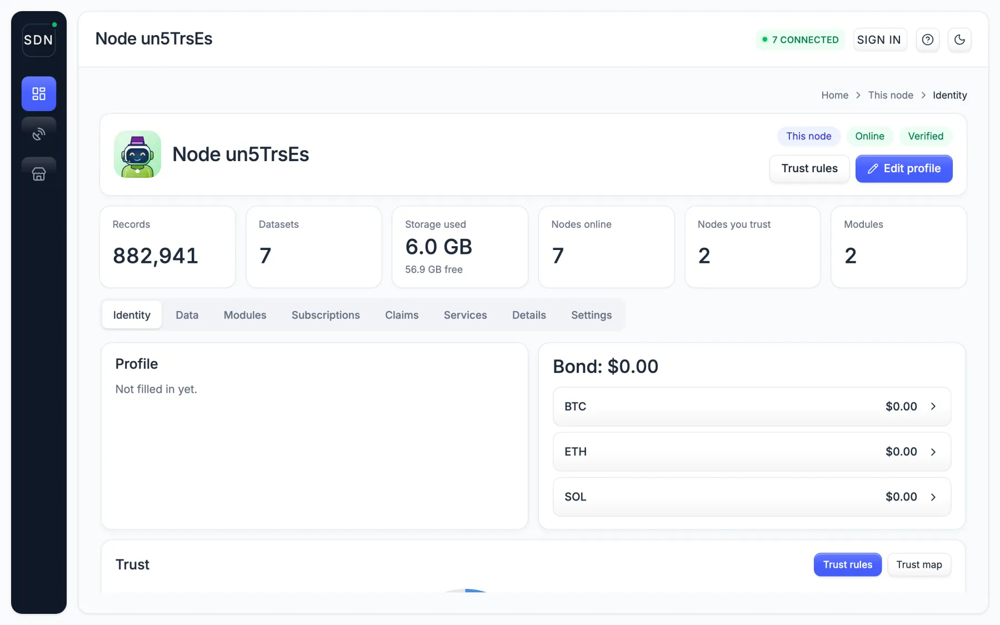
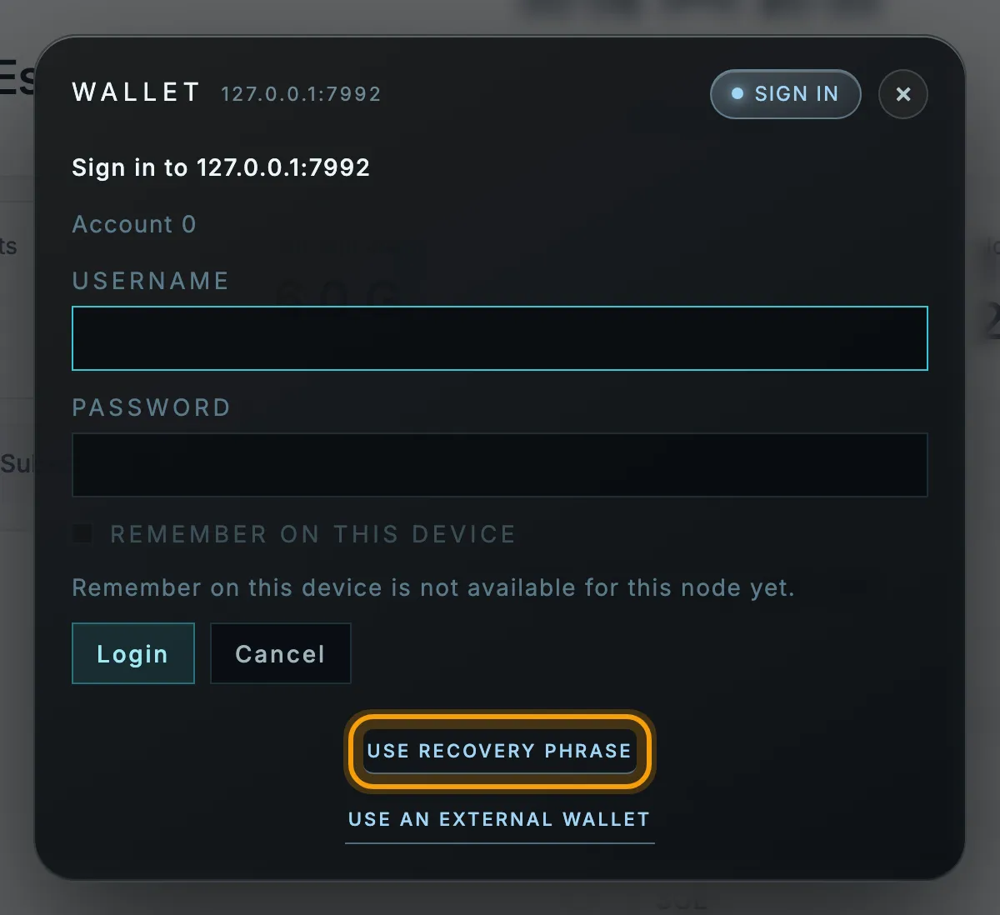
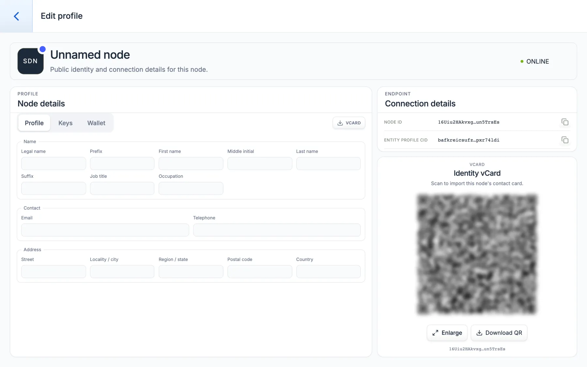
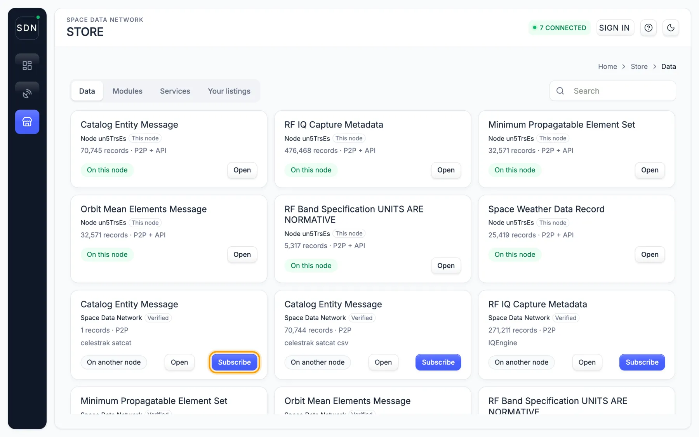
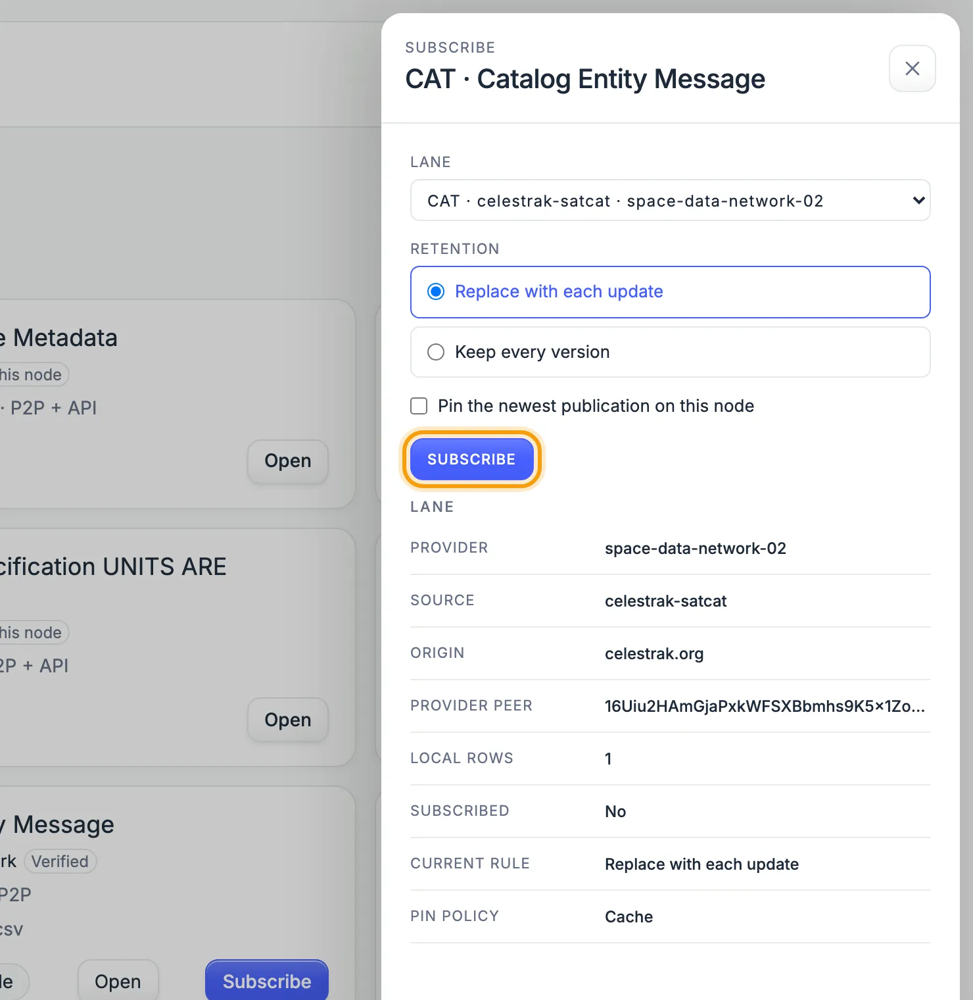
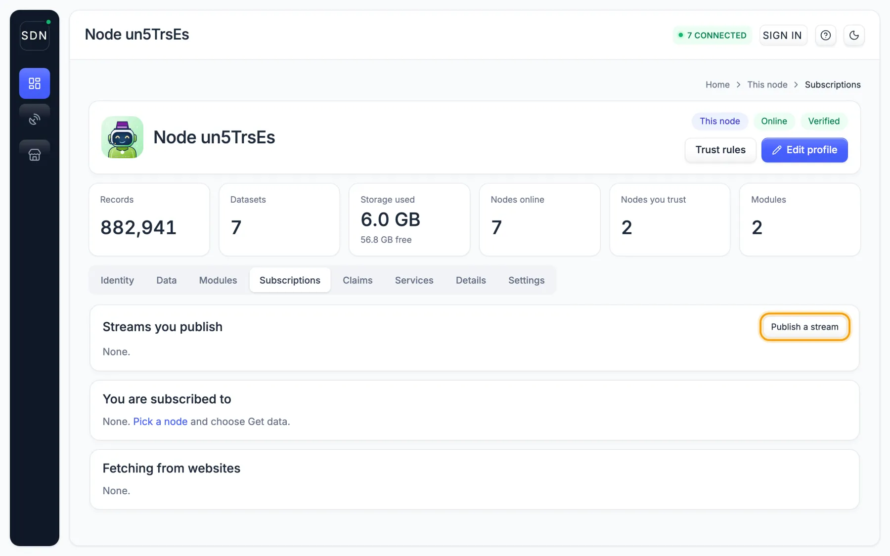
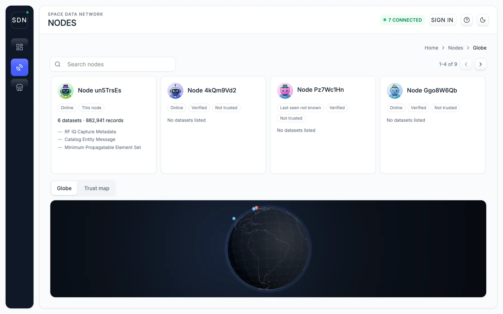

Get started
From install to live data in minutes
Install a node, sign in, subscribe to a feed, then publish your own. Each step shows the screen you will see; the highlighted control is the one to click.
Install and open
Get the desktop app, or install from a terminal. A node starts on your machine and its dashboard opens.
curl -fsSL https://spacedatanetwork.org/install.sh | bash
spacedatanetwork start
spacedatanetwork openirm https://spacedatanetwork.org/install.ps1 | iex
spacedatanetwork start
spacedatanetwork openThe dashboard lives at http://127.0.0.1:5001/. The icons on the left switch between This node, Nodes and Store.

Sign in as the owner
The first start created your node's ID. Its recovery phrase is the owner's key.
- Reveal the phrase: in the desktop app, Node → Show recovery phrase; in a terminal,
spacedatanetwork show-identity --show-mnemonic. - Click Sign in, then Use recovery phrase.
Write the phrase down and keep it offline. It rebuilds your ID on a new machine, and anyone who has it can act as you. There is no account or password to register.

Fill in your profile
Click Edit profile and add your organization and contact details. This becomes your digitally signed public listing, so others can find you and check that your data is really yours.
Share it as a contact card: the VCARD button or the QR code carries your details plus the proof that they are genuine.

Find data
Open Store → Data. Each listing shows the data type, who publishes it and how many records it holds. Open data is free.
Listings marked On another node can be subscribed to. Use Search to filter by type or provider.

Subscribe
Click Subscribe on a listing, choose what to keep, and confirm.
- Replace with each update keeps the latest version only.
- Keep every version keeps the history.
- Pin also stores the newest publication on your node.
New records stream in as they are published. Each one is checked against its publisher's signature before it is stored.

See what you hold
This node → Data shows every dataset on your node and how many records each has.
Your own software reads the same data from the node's local API, or from a terminal: spacedatanetwork search data --schema OMM --format csv.

Publish your own
Signed in as the owner, open Subscriptions and click Publish a stream. Pick a standard format (orbits are OMM, ephemerides OEM, conjunctions CDM, catalogs CAT) and list it.
Every record you publish carries a digital signature from your ID, so anyone can confirm it came from you, unaltered. From code it is one call:
import { SDNNode } from '@spacedatanetwork/sdn-js';
const node = new SDNNode();
await node.start();
await node.publish('OMM', ommData);
Explore the network
Nodes lists every node your node knows: whether it is online, whether its profile is verified, and what it publishes. The globe and trust map show where they are and who trusts whom.
Mark the nodes you rely on as trusted with Trust rules on the This node screen.

Go further
From a terminal
# is the node up?
spacedatanetwork status
# fill in your public listing, then share it as a QR code
spacedatanetwork identity wizard
spacedatanetwork identity export --format qrcode
# data formats on the network, who publishes orbits, pull records
spacedatanetwork search standards OMM --format json
spacedatanetwork search providers celestrak --schema OMM
spacedatanetwork search data --schema OMM --format csv
# digitally signed software updates
spacedatanetwork update checkFull reference: server overview, API guide, operator enrollment.
Build a module
Modules are digitally signed WebAssembly files. The same file runs in a browser, on a server or on an edge device, and can only touch what the node hands it.
npx space-data-module compile --manifest ./manifest.json --source ./src/module.c --out ./dist/isomorphic/module.wasm
npx space-data-module check --manifest ./manifest.json --wasm ./dist/isomorphic/module.wasm
npx space-data-module sign --wasm ./dist/isomorphic/module.wasm --key ./keypair.jsonSee the Module SDK.
Spec sheet for IT and security review
This is the short version of what a Space Data Network node is, what it runs, what it needs, and what it talks to — written for the people who approve software on your network. Everything here is the shipped default; every value can be changed in the node's configuration file.
Architecture in one paragraph
A node is one long-running process on one machine. It joins a peer-to-peer network (libp2p, the same networking stack as IPFS), receives and publishes small digitally signed records in the Space Data Standards formats (satellite orbits, catalog entries, conjunction warnings, space weather, and so on), stores them on local disk, and serves them to your own software over a local HTTP API and a browser dashboard. Optional analysis modules run inside a WebAssembly sandbox in the same process. There is no central server: your node talks to other nodes directly, and every record carries the publisher's signature, so provenance is verified rather than assumed.
Software components
| Component | What it is | Runs as |
|---|---|---|
| Node daemon | Single Go binary spacedatanetwork: libp2p host, record store, HTTP API, dashboard, module runtime. Statically linked; no external database, no interpreter. | One background service (systemd, launchd, or the Docker container) |
| Record store (FlatSQL) | A SQL engine compiled to WebAssembly that indexes the FlatBuffer records in place. Append-only stream files under the node's data directory; no SQLite, no Postgres. | In-process, via the WasmEdge runtime bundled with the binary |
| Kubo (IPFS) | Content-addressed storage for larger published assets and archives. Bound to loopback only; it never fetches arbitrary content for outside callers. | Managed child process of the daemon (bundled), or an existing Kubo you already run |
| Module runtime | Optional digitally signed WebAssembly modules and flows (analysis, ingestion). Each runs in a WASM sandbox with only the capabilities it declares (timer, HTTP egress, guarded persistence). | In-process, WasmEdge |
| Dashboard and API | Web dashboard and REST/WebSocket API on the admin listener. Sign-in is by cryptographic key; authentication is required by default. | Loopback listener 127.0.0.1:5001 |
| Desktop app (optional) | Same node wrapped in a desktop application with the dashboard as its window. | User application |
Hardware and platform
| Minimum | Recommended | |
|---|---|---|
| CPU | 2 vCPU, x86-64 or arm64 | 4 vCPU |
| Memory | 4 GB | 8 GB |
| Disk | 40 GB SSD (the node refuses writes under 5 GiB free) | 100 GB SSD or more, sized to the feeds you keep |
| Network | Any broadband; works behind NAT | A public IP if you want to relay for others |
| Operating system | Linux x86-64 or arm64, macOS Apple Silicon, or Docker (linux/amd64 image). Windows via the installer as it ships. Runs as an unprivileged user; never as root. | |
For reference, the public production nodes that serve the live catalog run on 2 vCPU / 8 GB virtual machines.
Ports
Inbound. None are required. A node behind a firewall or NAT still receives and publishes data through relays and hole punching. Opening the peer-to-peer ports makes the node directly reachable, which improves connectivity and lets it help other nodes.
| Port | Protocol | Purpose | Exposure |
|---|---|---|---|
| 4001 | TCP and UDP (QUIC) | libp2p peer connections | Optional inbound; recommended open |
| 8080 | TCP (WebSocket) | libp2p for browser peers | Optional inbound |
| 4003 | UDP (WebRTC-direct) | libp2p for browser peers | Optional inbound |
| 5001 | TCP (HTTP, WebSocket) | Admin API and dashboard | Loopback only by default. Bind it wider only with TLS and authentication on. |
| 443 / 80 | TCP (HTTPS) | Public dashboard and status feed with managed TLS (Let's Encrypt) | Only if you choose admin.tls_mode: managed |
| 5002 | TCP (HTTP) | Bundled Kubo RPC | Loopback only |
Outbound. The node initiates these connections; nothing else.
| Destination | Port | Why |
|---|---|---|
sdn.spaceaware.io | 443 TCP (WebSocket over TLS) | Bootstrap peer: first contact with the network, and the digitally signed software-update feed |
159.203.150.8, 167.172.219.213 | 4004 TCP, 4001 TCP | Bootstrap peers (the two public production nodes) |
| Other network peers | 4001 TCP/UDP typically; peers may listen on other ports | Peer-to-peer data exchange and the public Kademlia DHT used for discovery |
spacedatanetwork.org | 443 TCP | Installer and documentation only |
Data sources you enable (for example celestrak.org, space-track.org) | 443 TCP | Only if you turn on an ingestion module for that source; off by default |
A minimal egress rule set is therefore: TCP 443 to the hosts above, and TCP/UDP 4001 to the internet for peer traffic. The node sends no telemetry, crash reports, or usage data anywhere.
Communication protocols
- Transport: libp2p over TCP, QUIC, WebSocket, and WebRTC-direct. Every peer connection is encrypted and mutually authenticated with libp2p TLS or Noise; a peer's identity is its Ed25519 public key.
- Discovery and routing: the public Kademlia DHT (the same one IPFS uses), tagged so nodes find other Space Data Network nodes; AutoNAT, hole punching, and circuit relay v2 for nodes behind NAT.
- Data distribution: GossipSub publish/subscribe topics per data type, plus content-addressed fetch of published record sets by SHA-256.
- Wire format: Space Data Standards FlatBuffers, size-prefixed. The same bytes travel the network, sit on disk, and come back out of the API; JSON is offered on HTTP responses.
- Local API: HTTP/1.1 and WebSocket on the admin listener; the served reference is at
/api/v1/docson any running node. - Signatures and keys: every record carries its publisher’s Ed25519 digital signature and is verified before it is stored. All of a node's keys derive from one BIP-39 mnemonic (SLIP-10, BIP-44 paths); the mnemonic is encrypted at rest with a machine-derived key and fails closed if the machine changes. Encrypted record types use X25519 key agreement.
- Software updates: digitally signed update manifests over the update feed; a node verifies the signature, upgrades in place, and can roll back. No update is applied unsigned.
What leaves your network, and what does not
- Published by default: the node's identity record (organization name and contact details you enter in the wizard, plus its public keys) and any data you explicitly publish.
- Never published: private keys, the recovery phrase, configuration, and any record type not on the anonymous-read list. Anonymous read is decided per data type and is closed unless deliberately opened; today it covers the public catalog lanes (orbits, catalog entries, ephemerides, space weather, RF bands, link status, publication and dataset manifests, identity records, application manifests, entity groups).
- Administration: the dashboard and API require sign-in with a key the node knows. The node's own key is always an administrator; other operators are added by public key. No passwords are stored.
Where each of these facts comes from
- INSTALL.md — installation, configuration keys, and the ports table.
- SERVER-OVERVIEW.md — the node's architecture: storage, identity, networking, modules.
- OPERATOR-ENROLLMENT.md and AGENT-API-GUIDE.md — operator trust levels and the full API surface.
- Source code — the node is open source; the defaults quoted above are in
sdn-server/internal/config.
Questions from a security review are welcome: open an issue on GitHub or reply to the person who sent you this link.
How the orbital catalog is built
The combined catalog keeps every provider's orbits as attributed records and selects among them with an explicit, reproducible policy that weighs the evidence behind each solution. Read the Evidence-Supported ASO Catalog whitepaper or its Markdown source.